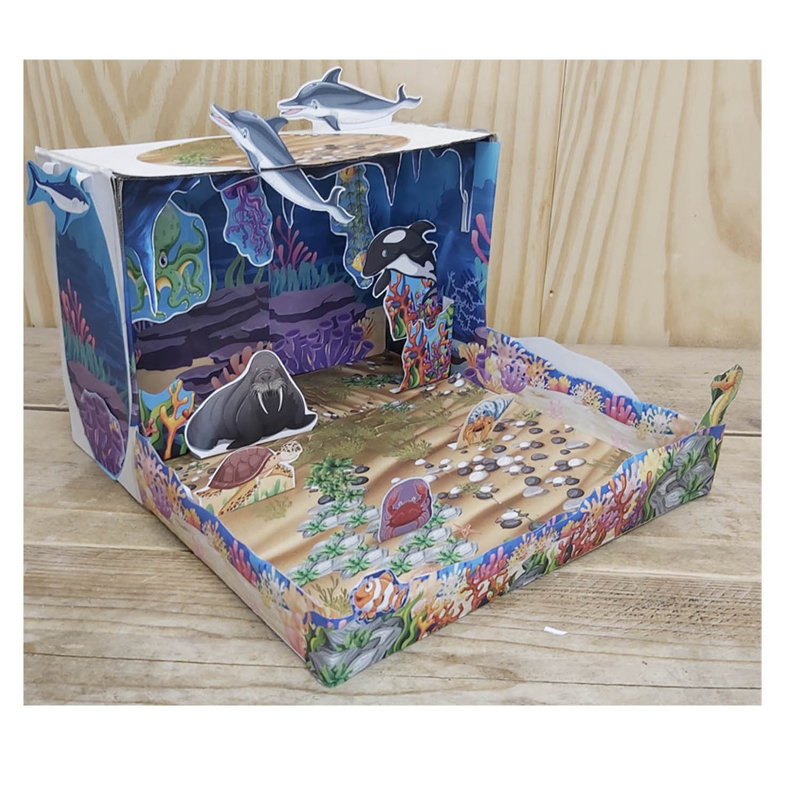
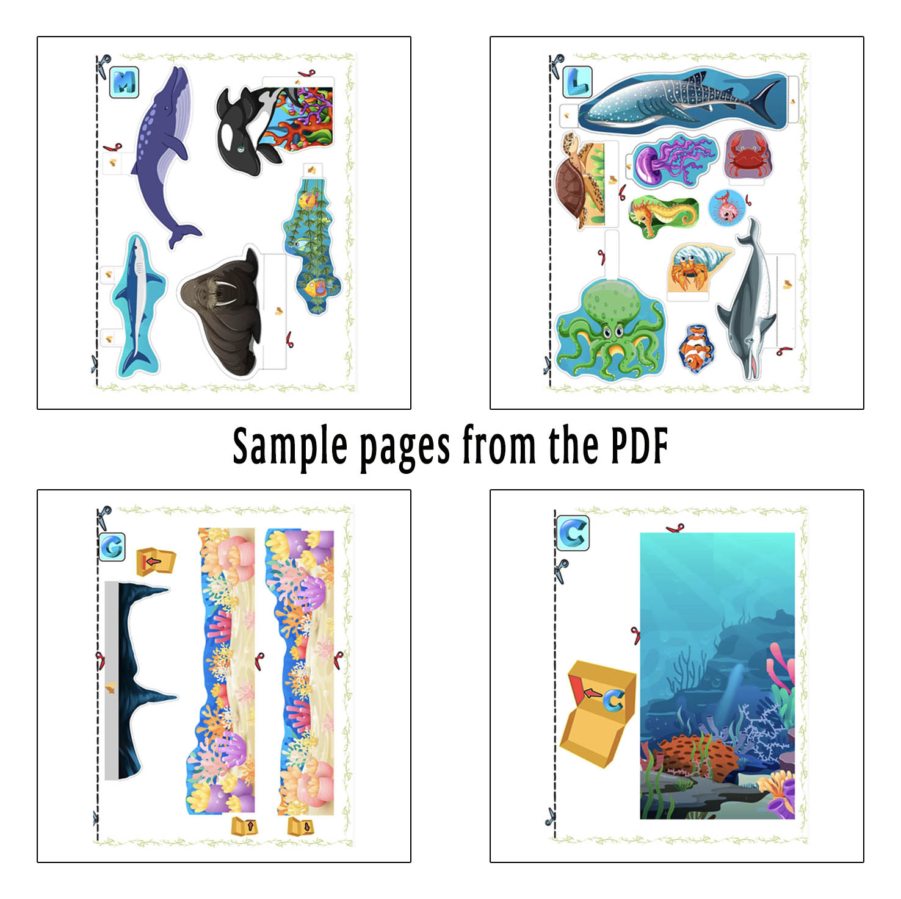

Maqueta de ecosistema acuático del océano
Convierte una caja de zapatos en un mundo submarino lleno de animales marinos, arrecifes y color. Imprime las páginas, recorta las piezas y construye una maqueta del océano en 3D paso a paso.
Una actividad creativa para proyectos escolares sobre el océano, los hábitats marinos, los animales y los ecosistemas acuáticos.
Ver proyecto
Construye una maqueta de ecosistema acuático
Imprime las piezas y crea un hábitat marino con profundidad dentro de una caja de zapatos. Coloca animales, corales y elementos del fondo oceánico para representar un ecosistema acuático y construir tu propio mundo submarino.




Aprende sobre los ecosistemas acuáticos
Construir una maqueta del océano ayuda a observar cómo diferentes animales y organismos forman parte de un ecosistema acuático y ocupan distintas zonas del hábitat marino.
Hábitat marino
El océano contiene muchos hábitats diferentes, desde aguas cercanas a la costa hasta zonas más profundas. Cada ambiente ofrece alimento y refugio a distintas formas de vida.
Arrecifes y vida marina
Corales, algas y otras formas de vida crean lugares donde muchos animales pueden alimentarse, esconderse y vivir dentro del ecosistema marino.
Animales del océano
Delfines, ballenas, tortugas, peces, pulpos y otros animales marinos tienen diferentes formas de moverse, alimentarse y sobrevivir en el agua.
¿Qué incluye?
- 13 páginas a color.
- Fondos submarinos para la caja.
- Animales marinos, corales y otros elementos para recortar.
- Piezas que pueden colocarse en diferentes posiciones para crear profundidad.
- Archivo digital PDF para imprimir en casa.
Ideal para
- Proyectos escolares sobre ecosistemas acuáticos y hábitats marinos.
- Actividades sobre el océano y la vida marina.
- Manualidades de papel para niños.
- Aprender sobre animales, arrecifes y ecosistemas del océano.
- Familias que buscan una base sencilla para empezar un proyecto escolar.
¿Cómo hacer una maqueta del océano?
Solo necesitas una impresora, papel, tijeras, pegamento y una caja de zapatos o una caja de cartón similar. Con las piezas imprimibles puedes crear fácilmente las distintas capas de tu ecosistema acuático.
Construye tu propia maqueta del océano
Descarga el proyecto digital en PDF, imprime las páginas y crea una maqueta de ecosistema acuático para casa, clase o un proyecto escolar.
$3.49 USD · Pago único · Descarga digital
Ver todas las maquetas